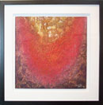

Gallery
Throughout Onimusha there are displayed original fine arts made by innovative contemporary artists. If there is any particular piece or pieces featured in the restaurants' decor that interest you feel free to browse through our gallery.
These visual artists are trailblazers in their own rite and - in keeping with Onimusha's independent spirit - we are honored to share their works with our guests.
Each artist regularly stages exhibitions of their work. If you wish to add their precious creations to your own private collection then you may contact them directly. For your convenience we have noted their contact details within their individual gallery listings.
Our Collection

Throughout Onimusha there are displayed original fine arts made by innovative contemporary artists. If there is any particular piece or pieces featured in the restaurants' decor that interest you feel free to browse through our gallery.

These visual artists are trailblazers in their own rite and - in keeping with Onimusha's independent spirit - we are honored to share their works with our guests.

Each artist regularly stages exhibitions of their work. If you wish to add their precious creations to your own private collection then you may contact them directly.

For your convenience we have noted their contact details within their individual gallery listings.